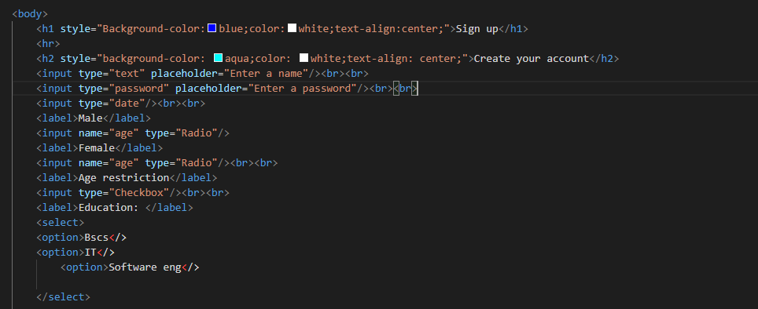
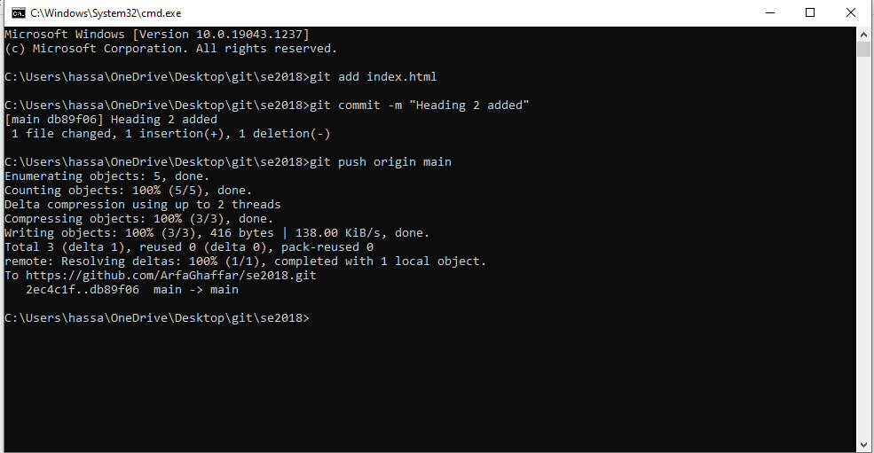
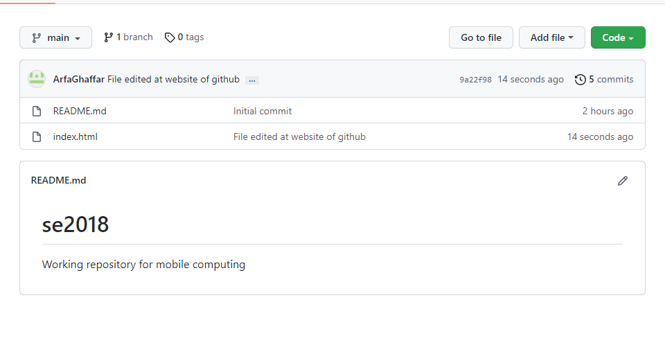

Use of VCS using Github
Web page explaining the details with images
1.Add a new repository in github
2.Create a new repository and name it.
3.Url of repository on your account.

4.Clone a repository.
5.Repository has been cloned on you local folder.
6.Create a simple html file.
7.Adding file to repository.
8.Changes made with messages to track changes.
9.Check status of repository.

10.Push changes to the server.
11.View of repository after push.
12.Changes made at local repository.

13.Adding new commit.

14.View of repository after second push.
15.Track of changes
16.Edit files on repository.
17.Edit files on repository online.
18.Commit changes at web.
19.File showing with latest commit.

20.To get changes from github to local repository.
21.File changed at github.com.
22.New commit added.
23.Same line changed at local repository.
24.Git add and commit, Merge failed
25.Choose an option of change in VSC.
26.Merge issue resolved.
27.Same data at github.com.

28.Details of commit.
29.Create a branch.
30.Make changes in style at VSC
31.Commit added.
32.Switch to main branch.
33.Merge different branches.
34.Delete new branch.
35.Go to settings and then to pages.
36.Change the branch from none to main and click save.
37.Your site link has been published.